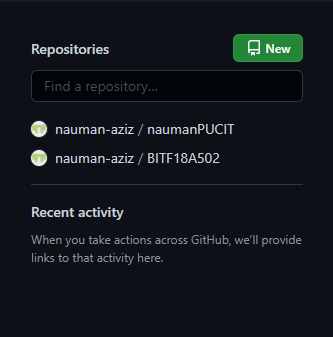
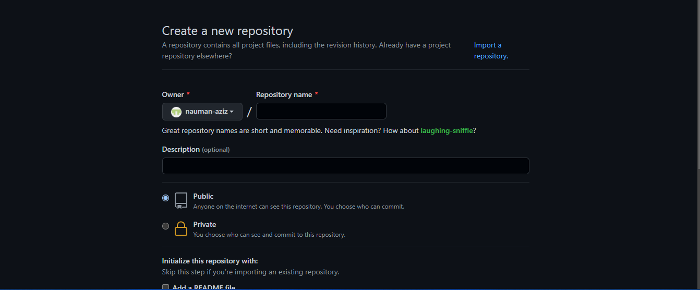
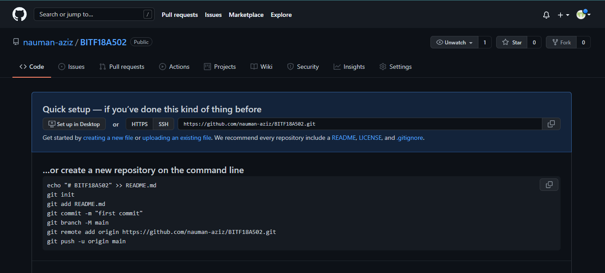
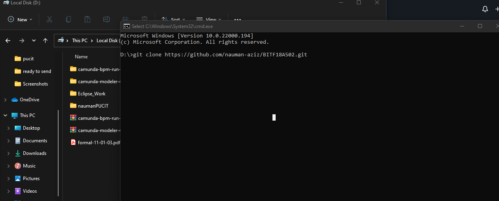
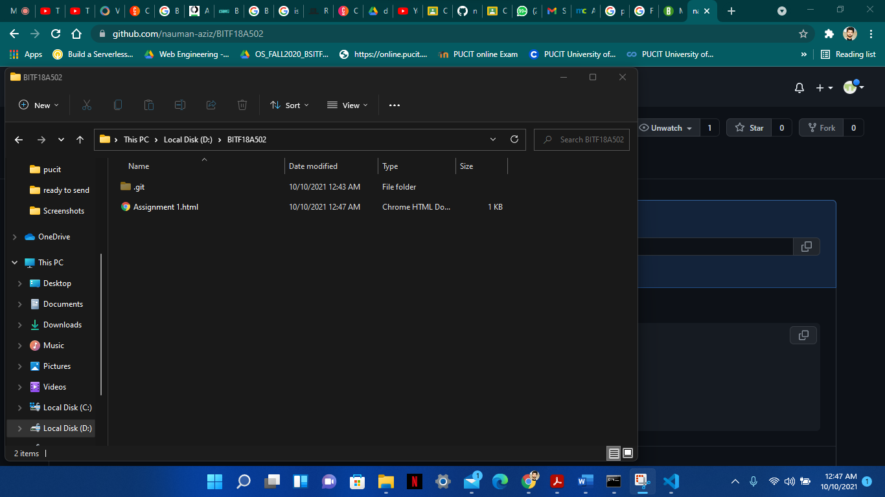
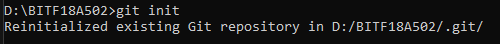
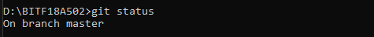
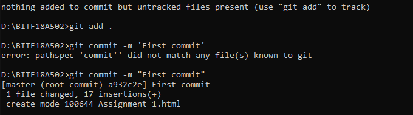
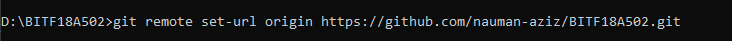
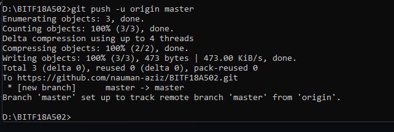

Follow the steps below Step #1: Create a repository from your github account by clicking the green button "New"  Step #2: Give a unique name to the repository and make it either public or private  Step #3: After creating the repository copy its link  Step #4: Now its time to make its clone at your local PC For this you have to open cmd in the file or folder and now write command 'git clone' and then paste the URL copied in step #3  Step #5: Okey let's make some documents in that local repository. In our case we are making a simple html document  its time to play with git commands Step #6: Get back to our cmd and here initialized the git repository in our local repository This all done by single command git init  Step #7: Checkout its status by git status  Step #8: Add all files or single file. In our case we are considering to add all files For this we have to use this command git add . Step #9: Now commit this with some message done by a command as below  Step #10: Set the origin URL and it is the same as the link copied in step #3  Step #11: In the last just push the code to the master branch and we are done Here we used the command git push -u origin master 